※上述圖片是在2019年舉辦當時刊載的內容。

預定舉辦期間限定活動「復刻:All信長總進擊 GUDAGUDA Final本能寺2019 輕量版」！
敵方我方都是織田信長！？
在大量勢力互相衝突的戰國時代為舞台，GUDAGUDA史上最大戰役就此開始！
本活動中進行主線關卡的話，活動限定從者「★4(SR)長尾景虎」將會以暫時加入。
推進主線關卡至後記(エピローグ)，讓「★4(SR)長尾景虎」正式加入吧！
※本頁面皆為開發中圖片。會有與實際圖片相異的情況。 ※本活動是再調整在2019年舉辦的期間限定「All信長總進擊 GUDAGUDA Final本能寺2019」更容易遊玩的「復刻輕量版活動」。 ※一部份的關卡為日後開放。 ※本活動不對應「關卡連續出撃」功能。
◆活動舉辦期間◆
2020年5月3日(日) 17:00～5月17日(日) 11:59
◆活動參加條件◆
滿足以下條件的御主才能參加
・通過「特異點F 炎上汙染都市 冬木」
◆有關從者真名的注意◆
在2018年12月31日(二) 23:00以後新配信的主線故事及期間限定活動、一部份關卡、宣傳活動及召喚中，會顯示隱藏真名的對象從者真名。
◆關於在上次舉辦時已獲得報酬的注意◆
在2019年舉辦的期間限定活動「All信長總進擊 GUDAGUDA Final本能寺2019」已獲得特定報酬的情況，會如以下變化。
・在上次舉辦時獲得過「聖杯」的情況，本活動中會以「傳承結晶」代替「聖杯」做為通過報酬。
・在上次舉辦時獲得過「靈衣開放權」的情況，本活動的對象關卡中可獲得稀有稜鏡代替「靈衣開放權」。
・在上次舉辦時獲得過「指令紋章」的情況，本活動的對象關卡中可獲得稀有稜鏡或魔力稜鏡代替「指令紋章」。
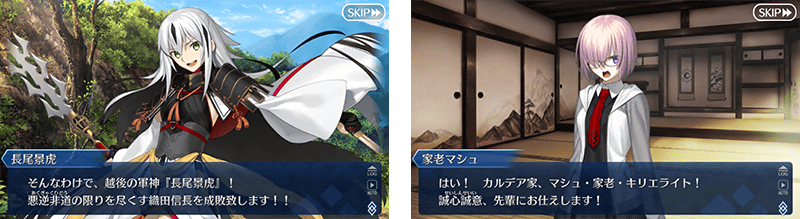

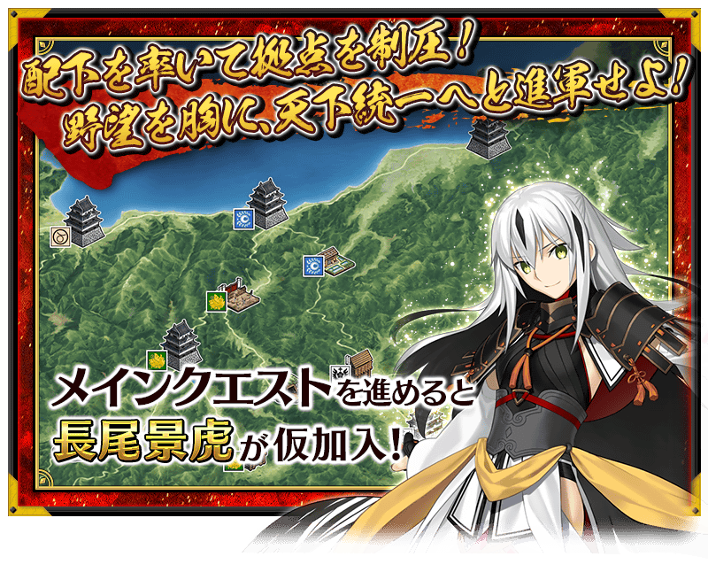
 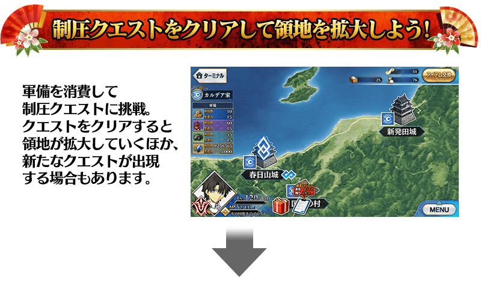
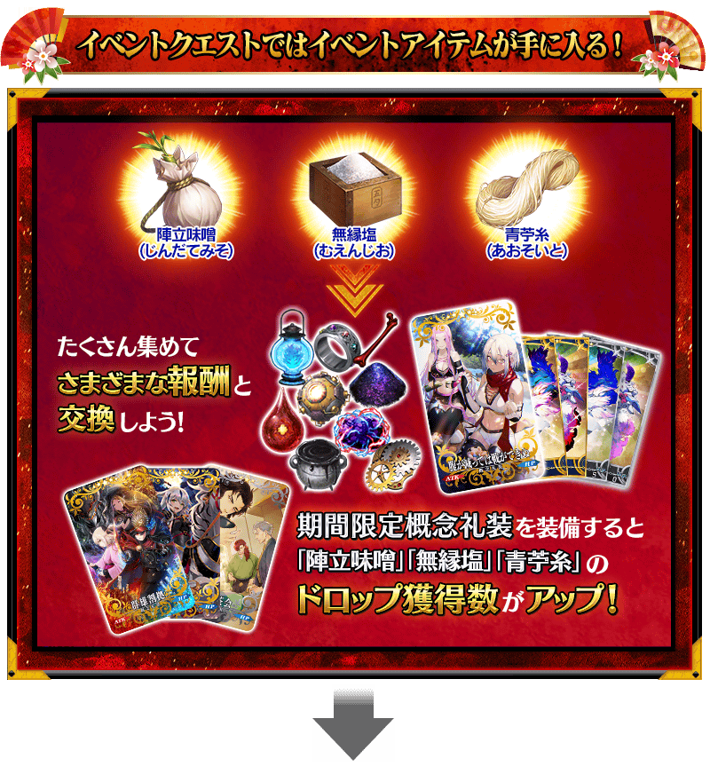
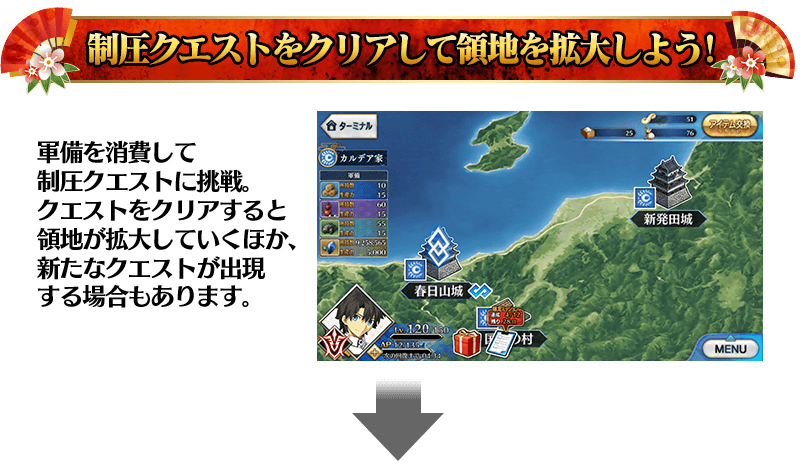
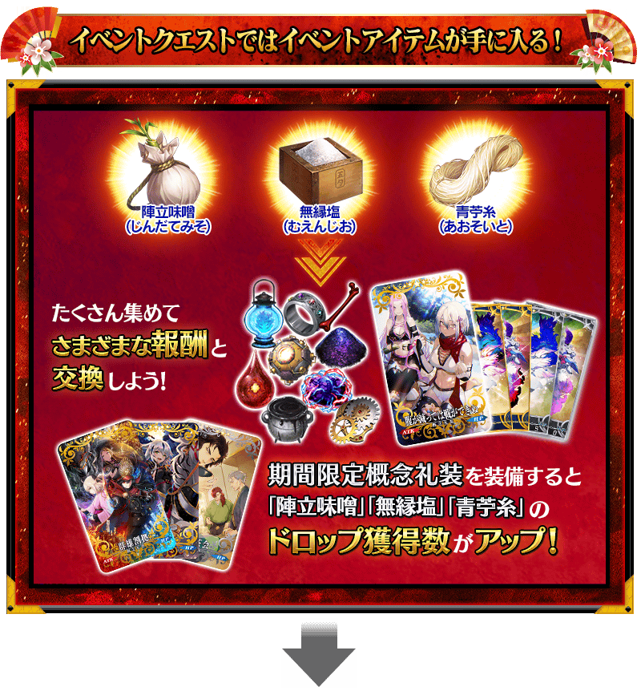

主線關卡的後記(エピローグ)為後日開放！
期間限定從者「★4(SR)長尾景虎」會在通過日後開放的後記(エピローグ)後正式加入。
◆後記(エピローグ)開放時間◆
2020年5月10日(日) 17:00～
※請注意於活動開始初期階段開放的主線關卡結束階段尚未正式加入。

通過特定活動關卡的話，可獲得「百人兵糧」「黑色火藥」「多多良鐵」與QP做為軍備。擴張自軍領地讓軍備的生産力上昇，變得可生產更多的軍備。

消耗生産軍備的話可執行壓制關卡。靠通過關卡來擴張領地，往天下統一邁進。另外，無法通過壓制關卡的情況，不會消耗軍備。
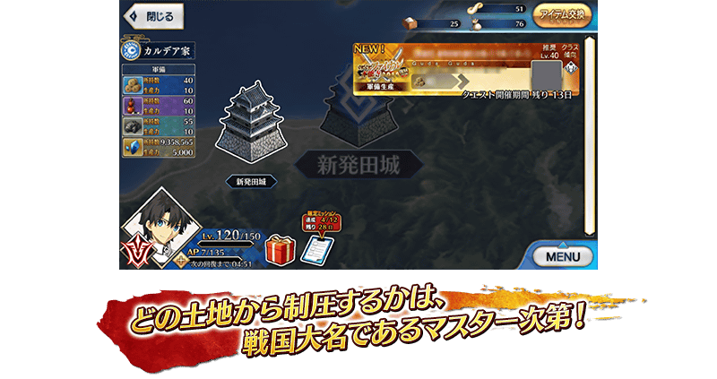
期間限定活動「復刻:All信長總進擊 GUDAGUDA Final本能寺2019 輕量版」中，通過所謂「登用事件」關卡的話會將從者加入麾下，可增加於關卡開始前的支援選擇畫面選擇的NPC從者。
根據關卡的不同，選擇適合NPC從者的話可做為攻略的開頭。由於關卡中容易活躍的NPC從者圖示會顯示「適役」，積極地活用吧。

【5月10日(日) 17:00追記】
以通過期間限定活動「復刻:All信長總進擊 GUDAGUDA Final本能寺2019 輕量版」所有主線關卡及「終局特異點」的御主做為對象，開放高難易度的「挑戰關卡」。
「挑戰關卡」就算通過後也不會消失，能無數次挑戰，可以變更從者和概念禮裝的組合等後再次挑戰。
※關卡通過報酬、戰利品、御主EXP、魔術禮裝EXP、絆點數只可在初次通過時獲得。
◆挑戰關卡開放時間◆
2020年5月10日(日) 17:00～
◆挑戰關卡參加條件◆
滿足以下條件的御主才能參加
・通過期間限定活動「復刻:All信長總進擊 GUDAGUDA Final本能寺2019 輕量版」的所有主線關卡
・通過「終局特異點」
◆挑戰關卡初次通過報酬◆
傳承結晶 1個
超值攻略方法・其1
本活動的期間中，強化「★4(SR)長尾景虎」時的獲得經驗值變成2倍。
是讓成為活動加成對象的「★4(SR)長尾景虎」等級一口氣上升的機會！
◆舉辦期間◆
2020年5月3日(日) 17:00～5月17日(日) 11:59
超值攻略方法・其2
對象從者在期間限定活動「復刻:All信長總進擊 GUDAGUDA Final本能寺2019 輕量版」在活動關卡中會得到自身的攻擊威力提升及在關卡通過時絆點數獲得量提升的加成！
強化對象從者，挑戰活動吧！
※活動加成的效果量因從者而異。 ※瑪琇・基利艾拉特的「絆點數獲得量提升」效果，是所謂「我方全體含候補的絆點數獲得量提升」的效果。支援時此效果無效。
【活動加成的效果量與對象從者】
| 自身的 攻擊威力 |
絆點數 獲得量 |
職階 | 稀有度 | 從者名 |
|---|---|---|---|---|
| ＋100% | 只限自身 ＋50% |
Lancer | ★★★★ | 長尾景虎 |
| Avenger | ★★★★★ | 魔王信長(織田信長) | ||
| ＋50％ | 只限自身 ＋20％ |
Saber | ★★★★★ | 沖田總司 |
| Archer | ★★★★ | 織田信長 | ||
| Rider | ★★★★ | 坂本龍馬 | ||
| Assassin | ★★★★★ | 李書文 | ||
| ★★★ | 岡田以藏 | |||
| Berserker | ★★★★★ | 土方歲三 | ||
| ★★★★ | 織田信長 | |||
| ★★★★ | 茶茶 | |||
| ★★★ | 森長可 | |||
| Alterego | ★★★★★ | 沖田總司〔Alter〕 | ||
| 我方全體 ＋5％ |
Shielder | ★★★ | 瑪琇・基利艾拉特 | |
| ＋30％ | 只限自身 ＋20％ |
Saber | ★★★★ | 尼祿・克勞狄烏斯 |
| Archer | ★★★★ | Emiya | ||
| ★★★★ | Emiya〔Alter〕 | |||
| Lancer | ★★★★ | 阿爾托莉亞・潘德拉剛 〔Alter〕 | ||
| ★★★ | 庫・夫林 | |||
| Rider | ★★★ | 牛若丸 | ||
| ★★★ | 美杜莎 | |||
| Caster | ★★★ | 美狄亞 | ||
| Assassin | ★★ | 咒腕的哈桑 | ||
| Berserker | ★★★★★ | 庫・夫林〔Alter〕 | ||
| ★★★★ | 阿塔蘭塔〔Alter〕 | |||
| Alterego | ★★★★★ | 志度內 |
※就算成為對象從者也會有在本活動的主線劇本未登場的情況。 ※「★5(SSR)魔王信長(織田信長)」是「★5(SSR)織田信長」靈基再臨到第3階段的話名稱會變成「★5(SSR)魔王信長」。 ※自5月3日(日) 11:00，在從者選擇畫面和從者強化畫面等，追加活動加成篩選器。由於是只顯示於活動活躍從者的便利功能，敬請搭配活用。
超值攻略方法・其3
裝備活動限定概念禮裝與期間限定概念禮裝的話，在活動中會受到各式各樣的恩惠。
裝備可靠活動道具交換入手的活動限定概念禮裝「★5(SSR)腹減っては戦できぬ」的話，在活動關卡中自身的攻擊威力提升。
另外，裝備在聖晶石召喚Pick Up的期間限定概念禮裝「★5(SSR)群雄割拠」「★4(SR)軍神」「★3(R)鬼の茶会」的話，活動道具「陣立味噌」「無緣鹽」「青苧線」各自的掉落獲得數提升。
※請注意各關卡的道具掉落率並非100％。
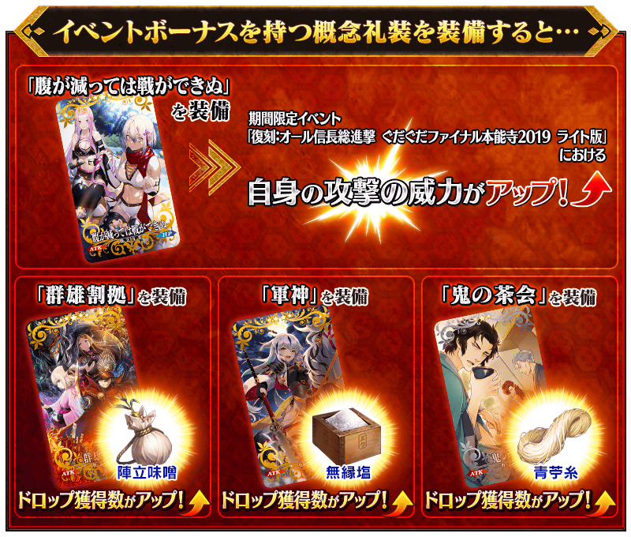

活動道具可自點擊管理室(ターミナル)畫面右上「活動報酬」鍵所顯示的「活動道具交換」畫面，交換以下的道具。
※關於英靈結晶・流星之芙芙ALL★4(HP)、英靈結晶・日輪之芙芙ALL★4(ATK)，會在5月10日(日)開放的本活動後記後通過後才能交換。 ※「百人兵糧」「黑色火藥」「多多良鐵」在活動期間結束後可交換成QP。 ※通過特定關卡後才可交換成活動道具「百人兵糧」「黑色火藥」「多多良鐵」。另外，只限活動舉辦期間中才能交換。
◆交換期間◆
2020年5月3日(日) 17:00～5月24日(日) 11:59
※活動道具交換期間結束後「陣立味噌」「無緣鹽」「青苧線」「百人兵糧」「黑色火藥」「多多良鐵」會消失。
◆能用陣立味噌交換的道具◆
|
【活動限定概念禮裝】 【技能強化＆靈基再臨素材】 【靈基再臨素材】 【其他道具】 |
◆能用無緣鹽交換的道具◆
|
【活動限定概念禮裝】 【技能強化＆靈基再臨素材】 【靈基再臨素材】 【其他道具】 |
◆能用青苧線交換的道具◆
|
【活動限定概念禮裝】 【技能強化＆靈基再臨素材】 【其他道具】 |

|
★★★★★SSR |
◆拿到活動限定概念禮裝EXP卡「ぐだぐだ天魔王×3」「毘沙門天ぞ是にあり！」吧！◆
做為任務的達成報酬，可入手能大幅強化概念禮裝的EXP卡！
請務必藉此機會，強化喜愛的概念禮裝！

|
【活動限定】 |

|
★★★★SR |
| 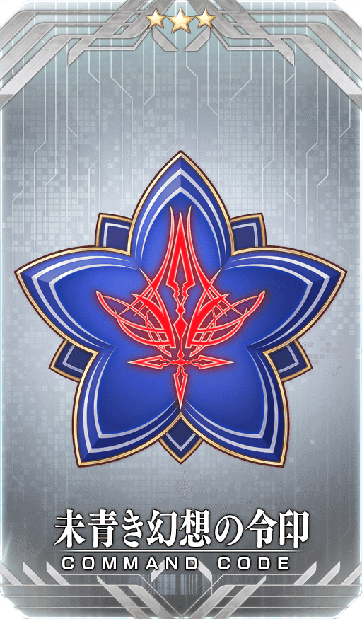 |
★★★R |
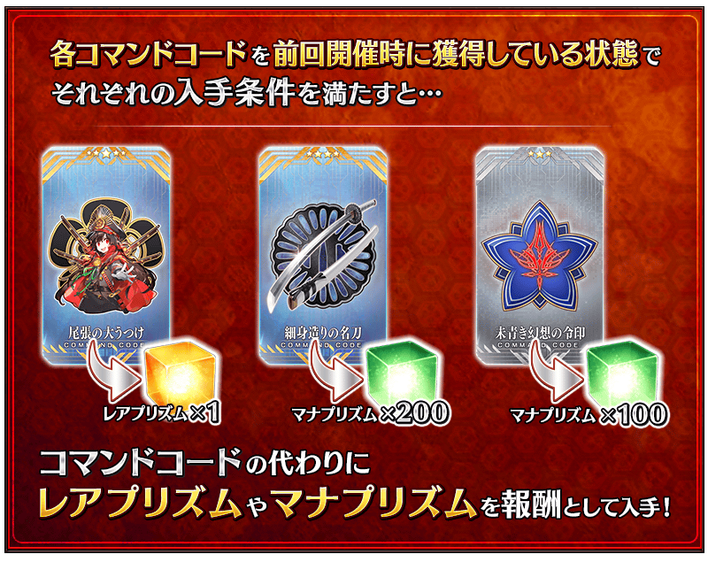
◆關於活動報酬指令紋章的注意◆
在2019年舉辦的期間限定活動「All信長總進擊 GUDAGUDA Final本能寺2019」中獲得過同樣指令紋章的情況，可獲得稀有稜鏡或魔力稜鏡代替指令紋章。
※對象指令紋章的稀有度對應的可獲得報酬有異。
※就算靈基變還(販賣)在期間限定活動「All信長總進擊 GUDAGUDA Final本能寺2019」で獲得済み的各指令紋章靈基變還(販賣)中獲得過的各指令紋章而消失的情況，在期間限定活動「復刻:All信長總進擊 GUDAGUDA Final本能寺2019 輕量版」中的報酬仍會變化成稀有稜鏡和魔力稜鏡。

◆靈基再臨◆
使用只能靠活動關卡報酬入手的「「毘天龍玉」，重複4次靈基再臨的話，卡面會有所變化！

※「★4(SR)長尾景虎」不會隨靈基再臨使戰鬥角色的外觀變化。
◆再入手特典◆
在復刻前的期間限定活動「All信長總進擊 GUDAGUDA Final本能寺2019」入手過「★4(SR)長尾景虎」的情況，在本活動能獲得再入手特典。
入手「累計6位以上」「★4(SR)長尾景虎」的話，第6位以後，每新入手1位就贈送稀有稜鏡1個至禮物箱。
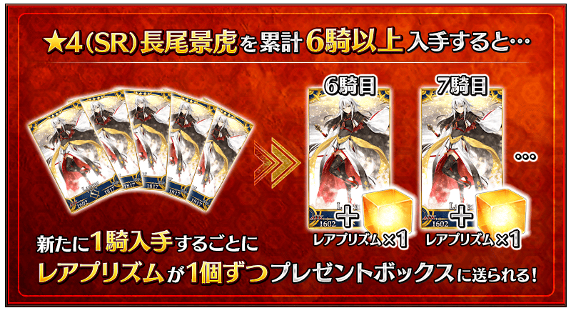
做為期間限定活動「復刻:All信長總進擊 GUDAGUDA Final本能寺2019 輕量版」的報酬，「★4(SR)長尾景虎」的靈衣開放權登場！
做為本活動特定的活動關卡報酬，可入手上述靈衣開放權。
另外，想開放靈衣的話，除了靈衣開放權外再加上必須滿足一些開放條件。
還有，在2019年舉辦的期間限定活動「All信長總進擊 GUDAGUDA Final本能寺2019」中獲得過靈衣開放權的情況可獲得稀有稜鏡代替靈衣開放權。
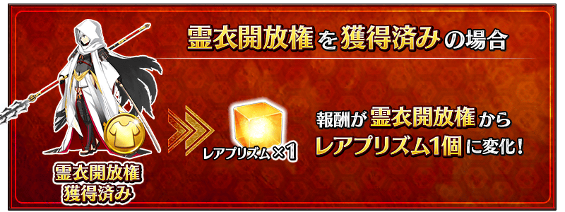
◆有關靈衣開放權的注意◆
※「★4(SR)長尾景虎」的靈衣是只有外觀的變化，語音沒變化的「簡易靈衣」。
※「★4(SR)長尾景虎」的靈衣開放權，只限期間限定活動「復刻:All信長總進擊 GUDAGUDA Final本能寺2019 輕量版」的活動舉辦期間才能入手。
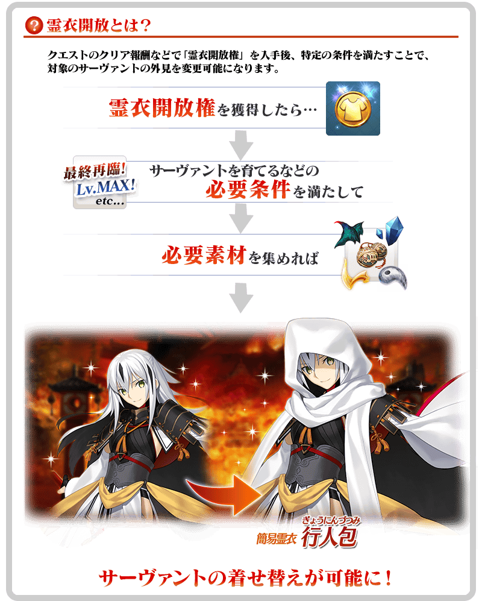

「靈衣開放」是自強化畫面進行。
※「靈衣開放」後自動切換戰鬥角色和圖示。若想回到「靈衣開放」前的狀態和變成其他再臨階段的情況，可自從者詳細畫面變更。 ※進行「靈衣開放」不會讓職階和能力等有所變化。

介紹「★4(SR)長尾景虎」平常時與簡易靈衣「行人包」時的2種寶具演出！
在「Fate/Grand Order」官方網站內的公告中，以影片公開寶具演出，敬請確認。

強化「★5(SSR)魔王信長(織田信長)」「★5(SSR)沖田總司〔Alter〕」「★4(SR)織田信長(Berserker)」的特別關卡「從者強化關卡」，在迦勒底之門永久追加。
不僅進行對象從者的強化，也可獲得聖晶石做為關卡通過報酬。
※請注意在從者強化關卡沒有文字冒險部份。
◆追加時間◆
2020年5月3日(日) 17:00～
◆開放條件◆
持有的強化對象從者，必須使其最終再臨。
※未持有對象從者的話，不會出現關卡。
※關卡沒有舉辦期限。


其他還有，期間限定「復刻 GUDAGUDA Final本能寺2019Pick Up召喚(每日交替)」同時舉辦！
關於詳情，請自下述橫幅確認。
■「復刻 GUDAGUDA Final本能寺2019Pick Up召喚(每日交替)」詳細情報